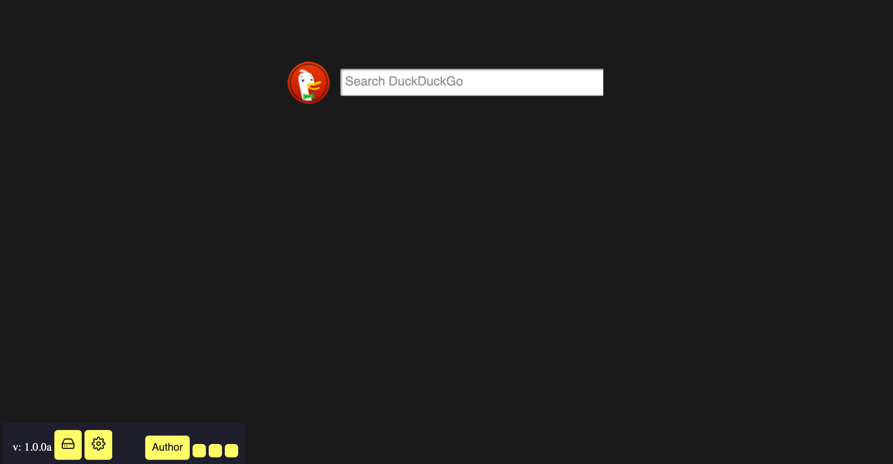
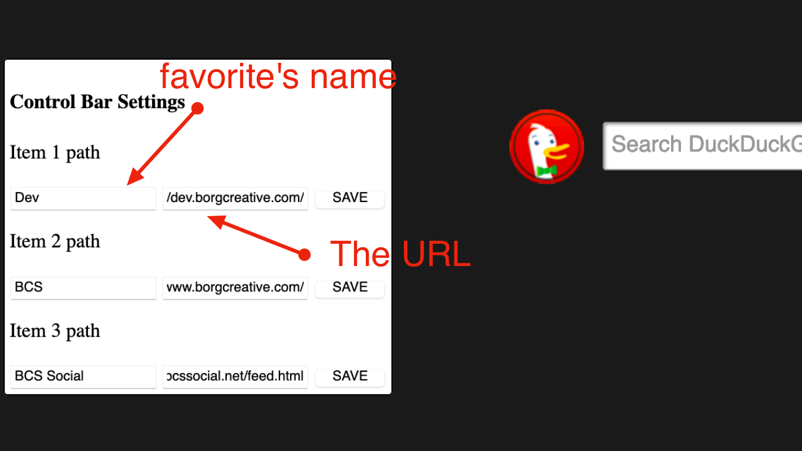

Welcome to the latest version of Fruity (Pineapple 2.4.0).
We have rebranded Fruity Lemon into Fruity Pineapple!
This new version includes "Mock Up Mode."
Mock Up Mode allows users to load their websites into a browser window that lacks any buttons or branding. This is excellent for developers who are making promos for their web projects and for streamers who want a simple browser window for their streams.
This new version includes a new feature: a fast action bar.
This bar can be found on the home page in the bottom left.
- - -
Before you start using this feature, let's go over it briefly.
There is 1 built in link (Author) and 3 customizable favorites. To start customizing, click on the little gear.
After selecting this gear, a menu like the one above will appear.
Here is where you can edit your favorites' names and links.
After you have saved your settings, select the gear again to dismiss the editing menu.
- - -
To make new favorites, select the gear and follow the instructions from the previous section.
If the previous session's fast action settings do not load automatically, select the little hard drive in the corner.